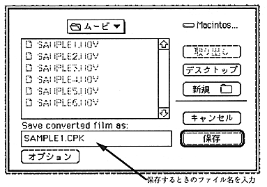

You can also convert by drag and drop. When the Cinepak file you want to convert is dropped on the MovieToSaturn_J icon, the conversion starts. In this case, if the extension is “.MOV”, rewrite it to “.CPK”, otherwise add “.CPK” to the original file name.